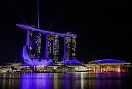
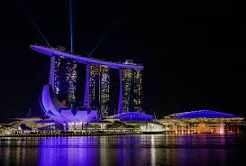
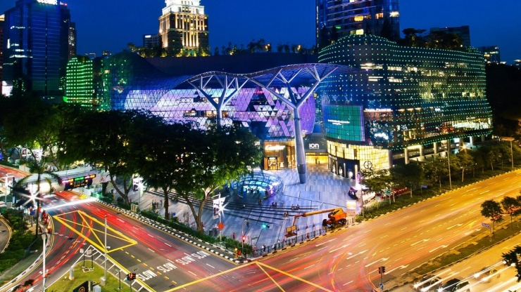
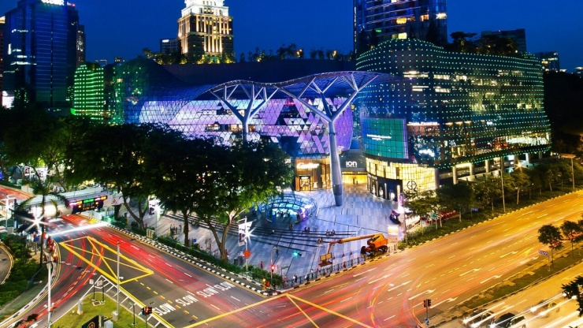

Singapore’s Marina Bay is a real beauty of nature, adorned with the most glitzy skyscrapers and uniquely architectural buildings. The promenade is there to give locals and tourists an up-close view of the bay.It also serves as a viewing area for various public events.
Take in the sights, admire Singapore’s impressive architecture, toast Marina Bay and enjoy prime people-watching at the Waterfront Promenade, a 3.5 kilometre stretch that loops around Marina Bay. The Promenade has been recently revamped, with an eco-friendly visitor centre and the Helix Bridge linking Bayfront to the Marina Centre, home to the Youth Olympic Park. Events and pop-ups are regularly hosted along the Promenade; the iconic Merlion (which has the head of a lion and the body of a fish) is an eternal attraction, spouting water from its mighty mouth while it guards the city. At 8pm each night, the Promenade hosts a dazzling laser show to wow its visitors; the sight of Singapore’s lights twinkling across the Bay are just as impressive.
 

Orchard Road is a whole street that's almost entirely dedicated to shopping. It is the must-visit location in Singapore for those looking for a bit of retail therapy (which many do come to Singapore for). The wide avenue is lined with a whole host of shopping centres – from the original Chinese emporiums to modern megamalls made from steel and glass.
Orchard Road is over 2 km long and there are 3 MRT stops lining it, namely Doby Ghaut, Orchard, and Somerset. If there’s no rush, simply walking between the malls, shopping centres, and boutiques can be a rather pleasant experience, and which can make up a big part of your visit to Singapore.
 

In Singapore, bumboat refers to a small boat or water taxi that is used for quick transport and river tours. These bumboats are often painted with eyes and faces supposedly to “see the danger ahead.”A bumboat ride down Singapore River is the cheapest and fastest way to see the stunning sights of downtown Singapore.
Go in the late afternoon to catch the sunset and get the best of day and night views of the waterfront. A nighttime bumboat trip is a great chance to enjoy the light show at Marina Bay from a different yet amazing angle.

Gardens by the Bay is a modern green space that occupies 101 hectares in central Singapore.This innovative tourist heaven was born from an international design competition to create an urban garden in the city center. The project was aimed to seal Singapore’s title as a “City in a Garden”.The park is divided into three major sections: Bay South Garden, Bay East Garden and Bay Central Garden.
The Sands SkyPark Observation Deck is a popular tourist attraction that overlooks Singapore from the top of the iconic Marina Bay Sands.The wood-floored viewing area is located at the “stern” of the ship-shaped SkyPark and can hold up to 900 guests.

Singapore’s Chinatown is a delightful mix of old and new at the city’s central area.It is a gold mine of Chinese heritage and culture with its old temples, historic shophouses, and traditional wet markets. Family-run stores and teahouses can also be found here, giving visitors a glimpse of the old Chinatown.
Clarke Quay is the premier nightlife hub in Singapore. As soon as the sun sets, Clarke Quay transforms into a lively and vibrant night spot.This historical riverfront district was named after Singapore’s 2nd Governor, Sir Andrew Clarke. The quaywas home to warehouses that stored commercial goods transported from the nearby Boat Quay.

National Orchid Garden is located within Singapore Botanic Gardens. It sprawls across three hectares on the botanical garden’s highest hill. The garden’s landscaped slopes display more than 1,000 orchid species and 2,000 hybrids. This gorgeous garden is divided into four zones that follow the four seasons with a distinct color theme for each zone.
Sentosa Island is dubbed as “Asia’s Favorite Playground”. It is located 15 minutes away from the city center and features exciting attractions that make it a wonderful island resort for rest and recreation. The island served as a fortress in the 19th century and became a military base after the Second World War. These days, Fort Siloso still stands as a military museum that displays old guns and war memorabilia.
Jurong Bird Park is the first wildlife park in Singapore and the biggest of its kind in Asia. It spreads across 20 hectares of verdant greenery on Jurong Hill and is home to more than 5,000 birds. The bird sanctuary opened its doors in 1971 and is managed by Wildlife Reserves Singapore.


© Sernel Miranda Asunto (2019)